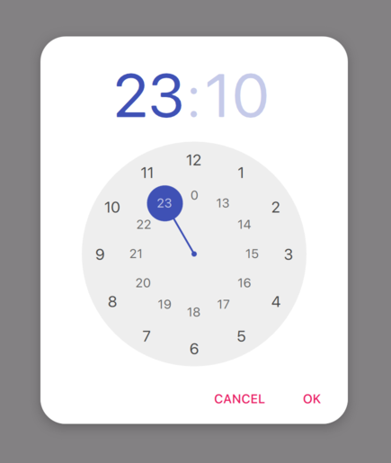
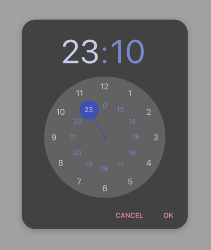

Qt Quick How-tos
This page aims to provide an easily discoverable, useful reference that shows the simplest and best way of performing specific tasks in Qt Quick. Each solution provides QML and/or C++ code snippets where applicable, and every snippet is automatically tested by Qt to ensure they remain functional.
How do I:
- Call a C++ function from QML when a Button is clicked
- See which item has active focus
- Create a time picker like Android's TimePickerDialog
- Use a C++ enum in JavaScript
Call a C++ function from QML when a Button is clicked
Assuming that the C++ type should be globally available to the QML files in the application, the simplest way is to make it a QML singleton with QML_SINGLETON. For example, in the header file, backend.h:
#include <QObject> #include <QQmlEngine> class Backend : public QObject { Q_OBJECT QML_ELEMENT QML_SINGLETON public: Q_INVOKABLE void doStuff(); };
backend.cpp:
#include "backend.h" #include <QDebug> void Backend::doStuff() { qDebug() << "Did stuff!"; }
You can then call that function from any QML file:
import QtQuick.Controls import MyModule ApplicationWindow { width: 400 height: 400 title: qsTr("C++ Button example") Button { text: qsTr("Click me") onClicked: Backend.doStuff() } }
If the C++ type only needs to be available to a small set of QML files, consider using QML_ELEMENT. For more ways of exposing C++ types to QML, see Choosing the Correct Integration Method Between C++ and QML.
This example assumes that the Backend type is available in a QML module. With CMake, this is done via qt_add_qml_module. For an example that demonstrates this in detail, see Building a QML application.
See which item has active focus
Write a property change signal handler for the window's activeFocusItem property:
import QtQuick import QtQuick.Controls ApplicationWindow { width: 400 height: 400 visible: true title: qsTr("Active focus debugging example") onActiveFocusItemChanged: print("activeFocusItem: " + activeFocusItem) Row { TextField { objectName: "textField1" } TextField { objectName: "textField2" } } }
This will print the item which currently has active focus to the console. To ensure that the output is useful, give each item a descriptive objectName.
Create a time picker like Android's TimePickerDialog
We've prepared an example that consists of a few QML files which demonstrate how to do this. They can be used in your application in the following manner:
import QtQuick import QtQuick.Layouts import QtQuick.Controls.Material ApplicationWindow { id: window width: 600 height: 600 visible: true title: qsTr("Time Picker Example") Material.theme: darkThemeSwitch.checked ? Material.Dark : Material.Light // Shows the selected time and opens the dialog. TimeComponentLabel { id: openDialogLabel width: parent.width - 80 anchors.centerIn: parent font.pixelSize: Qt.application.font.pixelSize * 8 renderTypeQuality: Text.VeryHighRenderTypeQuality interactive: !timePickerDialog.opened text: Qt.formatTime(new Date(1970, 1, 1, timePickerDialog.hours, timePickerDialog.minutes), "hh:mm") onTapped: timePickerDialog.openWithMode(TimePicker.Mode.Hours) } ColumnLayout { // We always want the openDialogLabel to be centered in the window, not us. // For that reason, we use anchors rather than putting the root items into a ColumnLayout. anchors.horizontalCenter: parent.horizontalCenter anchors.top: openDialogLabel.bottom anchors.topMargin: 24 spacing: 12 Switch { id: is24HourSwitch text: qsTr("24 Hour") checked: timePickerDialog.is24Hour } Switch { id: darkThemeSwitch text: qsTr("Dark") } } TimePickerDialog { id: timePickerDialog anchors.centerIn: parent is24Hour: is24HourSwitch.checked onTimeAccepted: print("A time was chosen - do something here!") } }
 TimePickerDialog in its light theme. |  TimePickerDialog in its dark theme. |
Use a C++ enum in JavaScript
To expose a C++ enum to JavaScript (that is, QJSEngine, not QQmlEngine or QQmlApplicationEngine), use QJSEngine::newQMetaObject():
QJSEngine engine;
engine.installExtensions(QJSEngine::AllExtensions);
QJSValue backendJsMetaObject = engine.newQMetaObject(&Backend::staticMetaObject);
engine.globalObject().setProperty("Backend", backendJsMetaObject);
Backend backend(&engine);
const bool loaded = backend.load();
The enum can then be used from JavaScript:
export function backendStatusUpdate(backendStatus) {
if (backendStatus === Backend.Error) {
console.warn("Error!")
return
}
console.log("Backend loaded successfully")
}
When using QQmlEngine or QQmlApplicationEngine, there are easier options; see Choosing the Correct Integration Method Between C++ and QML for more information.
backend.h:
#include <QObject> #include <QJSEngine> class Backend : public QObject { Q_OBJECT public: Backend(QJSEngine *engine); enum Status { Unknown, Error, Loading, Loaded }; Q_ENUM(Status) bool load(); private: QJSEngine *mEngine = nullptr; };
backend.cpp:
#include "backend.h" Backend::Backend(QJSEngine *engine) : mEngine(engine) { } bool Backend::load() { // Do some loading here... const QJSValue module = mEngine->importModule(":/script.mjs"); if (module.isError()) { qWarning() << "Error loading script.mjs:" << module.toString(); return false; } const QJSValue function = module.property("backendStatusUpdate"); if (!function.isCallable()) { qWarning() << "backendStatusUpdate script function is not callable!"; return false; } const QJSValue functionResult = function.call(QJSValueList() << Loaded); if (functionResult.isError()) { qWarning() << "backendStatusUpdate script function had errors:" << functionResult.toString(); return false; } return true; }
For more information, see QObject Integration.